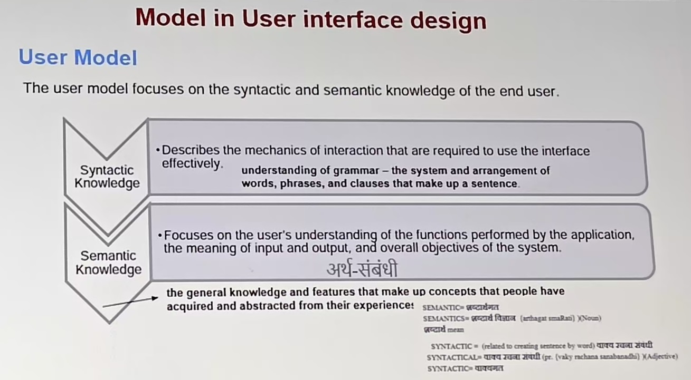
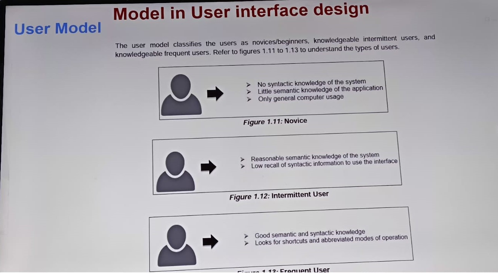

Four Types Model in User Interface Design:-
1 User model.
2 Design model.
3 Mental model.
4 Implementation model.
User model:-
It a representation of how end users interact with a computer program or another device and how the system reponds to their actions
The user model is established by a software engineer.
it describes the profile of the end users of the system. The user model is based on the age, gender, physical ablities, education, cultral, or ethnic background, motivation, goals, and personality of the end user
 Design model
The design model is created by a software engineer.
it results from the analysis phase of the requirements and takes into account the data and acrhitectural, interface, and procedural aspects of the system. the design model must be devloped to accommodate the information contained in the user's mental model.
A design model refers to a conceptual framework or methodology used by designers to guide the creation of interfaces. design model provide structured approaches for understanding user needs, organizing design elements, and crafting effective user experiences.
design model serves as a roadmap for designers, helping them organize their thoughts, makes informed design decisions, and ultimately create interface that meet user needs and ecpectations.
Mental model
In use interface design, a mental model refers to the conceptual representation that users devlope in their minds about how a system works. It's their understanding of how the interface and its functionalities operate based on their past experiences, knowledge, and expectations. Here's a breakdown on the concept:
1 Conceptual Representation :- Users create mental models by interpreting the information presented in their interface. This includes elements sucs as buttons, menus, icons, and navigation patterns.
2 Based on experienc and knowledge :- Mental models are influenced by user's prior experiences with similar systems or interfaces. For example, if a user is familiar with how web browsers work, they may apply that knowledgewhen interacting with a new website.
3 Expectations and assumptions :- User often make assumptions about how a system works based on their mental models. these assumptionscan affect their interactions and decision-making process while using the interface.
4 Guides user behavior :- A well-designed user interface aligns with user's mental models, making it easier for them to understand and navigate the system. conversely, mismatches between the interface and user's mental models can lead to confusion frustration.
Implementation model
The implementation model is created by the software implementers.
An implementation model is a representation of how a system actually works. it consist of the look and feel of the interface along with all supporting information such as resources, tutorials, help files, and videos that describes system syntax and semantics.
Basically, it serves as a trasnlation of the design model by providing an insight of the information contained in the user profile model and the user's mental model.
In implementation model refers to the plaqn or used to translate the finalized design into a functional interface that users can interact with.
it outline the technical specification, coding standards, and devlopement process required to built the user interface according to the design specifications. Here's a closer look at the concept
1 Technical specifications :- The implementation model defines the technical details of how the user interface will be devloped. this includes decisions about programing languages, frameworks, libraries, and other technical tools neededto bring the design to life.
2 Coding standards :- It establishedcoding standards and guidelines that devlopers must follow during the implementation phase. consist coding standards help maintain code quality, readability, and consistency across the devlopement team.
3 Devlopement processes :- The implementation model outlines the devlopement process and methodologies that will be used to built the user interface. this may include agile devlopement methodologies.
4 Integration with design :- The implementation model ensures that the devloped interface remains faithful to the design specifications provided by the UI designers. It involves close collaboration between designers and devlopers to ensure that the visual and interactive elements of the design are accurately implemented in the final product.
5 Accessbility and performance :- The implementation model addresses considerations such as accessbility standards and performance optimization techniques. Developers must ensure that the user interface is accessible to users with disablities and that is performs efficiently across different devices and network conditions.
6 Testing and quality assurance :- The implementation model includes provisions for testing and quality assurance processes to verify that the devloped interface meets the desired functionally, usability, and performance criteria. this may involve various testing methods, such as unit testing, intergration testing, and user acceptance testing.
Overall, the implementation model serves as a blueprint for devlopers, guiding them through the process of building the user interface in alignment with the design specification and project requirements. it ensures that the designed interface is successfully transformed into a functional and user-friendly product.